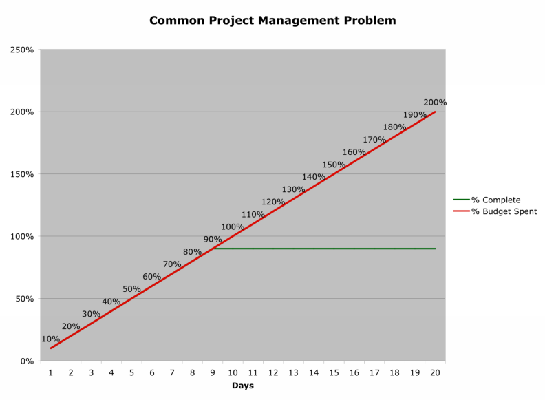

and sometimes downright fishy
thoughts on Technology and Leadership
by Herb Bowie
EVM for Mere Mortals
Note: This post was originally published on August 10, 2010. It was updated on Oct 7-8, 2012, to provide some additional clarity around elements that were still proving confusing to some.
In all my years working on IT projects, I think I’ve observed more silliness around the topic of Earned Value Management – or EVM, for those in the know – than on any other subject I can think of.
The many varieties of dysfunction that people exhibit towards this project management tool tend to place them in one of the following categories:
-
Those who have no idea what it is but are sure they don’t need it;
-
Those who view EVM as a necessary evil, like some sort of pagan god periodically demanding a ritual sacrifice from its followers;
-
Those who treat EVM numbers as powerful omens foreshadowing their fates, as if massaging the numbers to change the resulting stoplight colors could actually positively influence the outcomes of their projects;
-
Those who rely on amulets and talismans to keep the evil EVM from their doors – such as estimates that seem to always fall just a hair under the threshold that would trigger a hard and fast requirement for it;
-
Those high priests and priestesses of EVM who use a familiarity with its mystical language and calculations as an avenging force to root out and punish the unbelievers.
In practice, I’ve found much of this behavior to be based on a lack of understanding about what EVM is, how it works, and what it is good for. So let me try to cast a few rays of light into the darkness that often surrounds this subject.
The Case for EVM
The easiest way to understand the problem that EVM is trying to solve is by describing the all-too-frequently observed characteristics of an IT project without EVM. The typical scenario is that the project is reported by everyone involved to be in good shape until it nears its planned completion date, at which point it enters the dreaded “almost done” state, and then stays there for what seems like (and often actually is) an eternity, before being finally brought to some sort of dreary conclusion, usually through forced removal of life support.
In other words, the problem can be stated thusly: there is a strong human predisposition to assume, with the consumption of budget and the passing of time, that actual project progress is proceeding at the same pace. Sadly, facts recorded at project completion have repeatedly failed to demonstrate this correlation.

The Essence of EVM
Here is the best analogy I’ve been able to come up with to explain how EVM works. Let’s say that you are flying from Los Angeles to New York in order to serve as best man at your friend’s wedding. You fill up the plane’s gas tank, you figure out what time you have to get there, and you take off.
OK. You’ve been up in the air for an hour. The land below is skimming by at a reassuring rate. The needle on the gas tank shows that you’ve got plenty of gas left. Life is good, right? What could go wrong?
Well, two things, actually:
-
You could get there an hour late, thus missing the ceremony, in which case you may as well have stayed home.
-
You could run out of gas before you get there, in which case you would plummet to a fiery death.
Since neither of these outcomes appears desirable, you might look for some reassurance that you will avoid them both. So what additional data do you need? Two things:
-
You need to know your speed, so you can calculate when you will arrive.
-
You need to know your mileage, or the miles per gallon you are achieving, to know whether your fuel supply will get you to your destination.
EVM is simply a way of calculating these two pieces of data for a project. The first is called schedule performance, and is the equivalent of speed. The second is called cost performance, and is the equivalent of mileage (since a project’s budget is equivalent to a plane’s fuel).
For an airplane, of course, progress can be measured in miles traveled. For a project, progress is measured by tasks completed. And, since, unlike miles, all tasks are not of the same size, you need to factor in the size of each task as well.
Oh, and one more thing: since we lack any absolute units of measurement for project progress (no easy equivalent to miles in our analogy), our performance numbers are calculated as indices, in which we compare our actuals to our plan. So a value of 1.00 means that we are precisely on our plan. A value greater than 1 means that we are doing better than our plan. A value of less than 1 means that we are not doing as well as we had planned.
That’s pretty much the whole thing in a nutshell.
Those Confusing Formulae
Here is where most people run off the rails and become convinced that if they never hear of EVM again, it will be too soon.
Feel free to skip this section if it makes your head spin. It’s not all that important, unless you’re the person who will actually be doing the EVM calculations.
Here are the key terms used:
Budgeted Cost of Work Performed (BCWP): The amount of work actually completed so far, measured in terms of the total budgeted (i.e., planned) cost for all tasks completed to date. This is also referred to as the earned value.
Budgeted Cost of Work Scheduled (BCWS): The amount of work we had planned to complete by now (measured in terms of the total budgeted costs for all of the tasks that were planned to be completed by this date).
Actual Cost of Work Performed (ACWP): The amount of money we’ve actually spent to get us this far.
And here are the two key formulas:
Schedule Performance Index (SPI) = Budgeted Cost of Work Performed (BCWP) / Budgeted Cost of Work Scheduled (BCWS). In other words, how much work we’ve actually done at this point, compared to how much work we had planned to get done. Your SPI is an indication of how fast you can complete the work. In our airplane analogy above, SPI would be equivalent to groundspeed.
Cost Performance Index (CPI) = Budgeted Cost of Work Performed (BCWP) / Actual Cost of Work Performed (ACWP). In other words, how much we had planned to spend on the work we’ve completed, vs. how much we’ve actually spent. Your CPI is an indication of how costly it is to perform the work. In our airplane analogy above, CPI would be equivalent to miles per gallon.
One other point may be helpful: if most of your costs are in labor, and most of your labor is paid at roughly the same rate, then you can substitute hours for dollars in your calculations and still achieve essentially the same results.
Work Breakdown and Estimating
For a complex project involving many different types and sizes of activities, it is important to decompose the overall statement of work into lower-level tasks that will become the basis for your project plan. This decomposition is known as your Work Breakdown Structure (WBS). Each of these tasks can then be estimated in terms of effort, or cost, and then, based on the planned availability of your resources, these tasks can be scheduled. This then becomes your project plan, from which your budgeted costs can be derived.
In an ideal situation, all of this work breakdown, estimating and planning will have occurred before any budget or schedule has been assigned to the project. In a less than ideal situation, the project’s budget and schedule may have been derived from higher-level estimates, or even from wishful thinking. In either case, it is still important to perform the more detailed work breakdown; however then the task of estimating turns into a task of allocation: how much of the project’s available budget and time is it reasonable to allocate to each task? This allocation should be done on relative estimated sizes, however it is important that all of the project’s budget and schedule (and no more) be allocated to planned tasks, save possibly for some amount of prudent management reserve.
Reasons for Variations
It’s worthwhile noting that, if your SPI and CPI numbers are not perfect, this will always be due to one or more of the following three factors.
To help explain these causal factors, it may help to think of a bricklaying job. Let’s say that you need to lay 80 bricks, and you’re planning to have two bricklayers who can each lay 10 bricks an hour, and who charge $20 an hour. Therefore, you are planning for the job to be done in 4 hours, at a cost of $160.
Available Resources – If you have fewer resources than planned, then this will tend to drag down your schedule performance (SPI). Conversely, if you have more resources than planned, this will tend to improve your SPI. In other words, if only one bricklayer shows up to work, then it will take him 8 hours instead of 4, working by himself.
Note that the number of resources you have will not affect your cost performance (CPI). In our example, having only one bricklayer will delay the job’s completion, but it won’t cost you any more.
Efficiency/Productivity – If your resources are less productive than planned, then this will tend to drag down both your CPI and your SPI. Conversely, if they are more productive, then this will tend to improve both. In other words, if both bricklayers show up to work, but they only lay 5 bricks an hour, the job will take 8 hours instead of 4, and will cost you $320 instead of $160.
Note that, in EVM terms, the words “productive” and “efficient,” or their opposites, are not meant to necessarily reflect well or poorly on the value of the workers. Your CPI could be low because your workers are less productive than their peers, or because your estimates of how much work they could produce per unit of time were overly optimistic. From an EVM perspective, either of these conditions would result in a low CPI, and hence a “low” productivity.
Scope – Let’s say that you’re building a wall with your 80 bricks, and the size of the job was based on your customer’s measurements of how long the wall needed to be. Now, if you show up at the customer’s site, and it turns out the wall needs to be twice as long as the customer had previously indicated, then it will take 8 hours to complete the job, and will cost $320. In this case, however, neither the SPI nor the CPI were off, but instead the scope, or size, of the job doubled. This should cause you to renegotiate your contract and modify your plan accordingly.
Reacting to EVM Variations
I’ve seen cases where any sort of variation from CPI and SPI numbers between 0.99 and 1.01 resulted in general panic and manning of the lifeboats, but more discriminating responses are generally called for. Small and short-term variations from SPI and CPI numbers of 1.00 probably need no special attention. More sizable variations should typically elicit responses along the lines indicated below, based on the particular combination of SPI and CPI variations you have.
- CPI > or = 1 and SPI < 1:
- Your resources are performing well, but you are not getting as many as planned: you need to make resources more available (e.g., by providing more people and/or overtime).
- CPI > 1 and SPI > 1:
- Life is good: you can assign some resources to other tasks and still complete on time and under budget, or you can keep your current resources and finish ahead of schedule and under budget. (On the other hand, management will probably think you're padding your estimates on the next project, and so will trim them accordingly.)
- CPI < 1 and SPI < 1:
- You are getting the resources you planned, but they are not performing as well as you had planned: you will need to de-scope or improve performance (to correct SPI & CPI), or acquire additional resources (to correct SPI).
- CPI < 1 and SPI > 1:
- You are on schedule, but only because you are applying more resources than planned. You will need to de-scope or improve performance to avoid going over budget.
Implementation Tips
Here are a few simple tips for an effective EVM implementation.
-
The work in your project should be broken down into relatively discrete tasks (roughly one to two weeks in duration). If you end up with one or more large, amorphous tasks, then you have just reproduced essentially the same problem statement that we started with, only at a slightly lower level.
-
Each task should produce a deliverable whose completeness can be easily and objectively determined. In other words, there should not be a lot of room for debate about whether a particular task is done yet or not: otherwise you are liable to find out at the end of the project that tasks you thought were “done” are really still in varying states of completion.
-
Your project team needs to take ownership of the EVM numbers and the results of the calculations. In practice, the only way I know to achieve that is to have the entire team review their EVM numbers on a weekly basis.
The Agile Controversy
One question that often arises is whether it is valid or necessary to apply EVM to Agile projects.
Let’s think about this for a minute. In order to implement EVM we need to break our work down into discrete tasks… each task needs to have a discrete deliverable that can be readily determined to be done or not… we need to objectively track our progress against our backlog of tasks yet to be completed… we’re more concerned with the quantity of work completed than which specific tasks were completed….
Hmmm…. In Agile, we break our work down into features, and features into tasks… we deliver those features on a regular basis, with short delivery cycles… the team has a “definition of done” for each feature… the backlog is dynamic… we regularly track features delivered vs. features still in our backlog….
Oh. Wait a minute. I get it. Agile is essentially a form of EVM for software projects.
So the Agile vs. EVM controversy should be a non-issue, so long as the project is estimating all of the work needed for a project at some level (and not just whatever happens to fit in the current iteration). If an agile project needs to feed data into a more traditional EVM system, then that should be easy to arrange.
If All You Have is a Hammer…
Not every project management issue is a nail that can be driven into place with the hammer of EVM.
For one thing, it is no substitute for identifying your critical path through your project, which will identify those tasks that must be completed on time in order for the project as a whole to be completed on time. If you are 90% done, with a perfect SPI and CPI, but you have been avoiding all the tasks on your critical path, then you may still be a year away from completing your year-long project.
Also, EVM is meaningless unless you first have a well defined project scope and work breakdown structure. If you don’t know your destination, or don’t know the route you’re going to take, then knowing your speed and mileage won’t really help to get you there on time and within your budget.
October 8, 2012